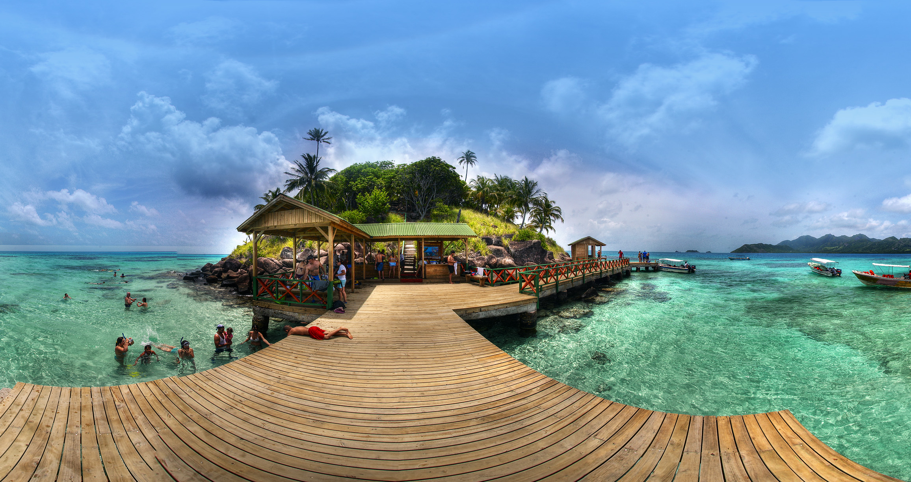

L’Illa de Sant Andreu (coneguda també com San Andrés Illa) és la més gran de les illes que formen part de l’Arxipèlag de Sant Andreu, Providència i Santa Catalina, sent la seva extensió total de 26 km². Actualment Colòmbia exerceix domini sobre l’illa, formant part de l’únic departament insular del país. Encara Nicaragua, nació físicament més propera a aquesta illa, reclamava també sobirania sobre la mateixa i les illes adjacents, la Cort Internacional de Justícia va dictaminar la sobirania total de Colòmbia sobre l’arxipèlag el 19 de novembre del 2012.
El 2012 van ingressar a Sant Andreu 629.072 turistes per via aèria, dels quals 542.696 van ser visitants nacionals i 86.376 internacionals, el que va significar un creixement del 19,7% en el turisme nacional respecte a l’any anterior i del 14% entre els visitants arribats d’altres països. L’ocupació hotelera va ser del 80,5%.
